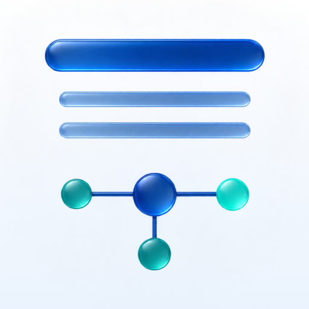

Beta of 15 November 2026
Open the beta on TestFlightFree. Needs the TestFlight app on an iPhone, iPad or Mac.
Before you update. This beta writes a newer sync file again, because a keyword can now rank without being searched for. Update every device you sync; an older build leaves the file alone and stops syncing until it is updated. Nothing is lost.
Each keyword is searched with everything kept, searched and ranked with the rest, or not searched and used only to rank. A broad word such as “pain” can lift what your other follows find.
Keywords are listed by how they are used. Tap one to move it, raise or lower what mentions it, edit or delete it.
Added by hand, suggested from your publications, from a current interest or from a search: it says so under the keyword.
Ranking now applies to every paper whose title or abstract mentions the keyword, whatever found it. Lower never sinks a paper a journal or researcher you follow found.
Second in Tune, each with a switch on its row, the day it was added, and an optional last day. A text in use brings in papers, not only orders them.
A new interest replaces the oldest when the list is full, one not in use first. Turn on Keep them all to delete only by hand.
After a search, add it to current interests for two weeks, follow it as a keyword, or let it go.
A pasted text gets a short, meaningful name, written on your device.
Apple’s model now picks from phrases that are in the text, so it no longer invents any, and starts as soon as the sheet opens.
With OpenAlex on, each phrase shows how many papers it would find. Broad ones are added to rank only; too narrow ones are cut to their main words.
The keywords OpenAlex gives the papers your phrases find: how the field names your subject. Only the phrases leave the device, never the text.
Tap a suggestion’s pencil, or type a keyword. Join words that must all appear with +, as in “rTMS + analgesia”, and it is counted again.
An option in Tune: a short headline over each paper’s title, written with its takeaway.
Find your ORCID iD by name, see what to tick where a key is made, and follow a short first-run list.
Whether it searches for papers or only orders the feed.
The Mac app now keeps your OpenAlex, Zotero and model keys after a restart.
A thumb no longer rebuilds the whole feed, and settings are saved once a slider stops.
The feed is one ranked list. Why each paper is there is still on every post and in the panel of reasons.
Pick the one reason: a keyword, journal, author, institution, topic or title phrase. Only that moves.
Each thumb fades over weeks, and a change of mind counts for more. The numbers are in Tune, and you can pin any one.
It also pushes down similar papers, never what you follow or what cites you. Your reading list and For me teach it too.
Hide, Lower, Normal, Higher or Maximum for each keyword, journal, researcher and topic. Maximum keeps everything it finds.
Search every source for a phrase. Afterwards you choose whether it counts toward your feed. Searches stay on your device.
Paste a grant proposal or thesis plan, up to ten, to rank the feed and suggest keywords. It stays on your device.
From Apple’s on-device model, or your own Claude, ChatGPT or other model. A screen shows what leaves the device, every time.
Three more free sources, no key. arXiv and OSF are off until you switch them on in Tune.
Tune shows whether it is saved and in use, and tells you if the device would not keep it.
Read later adds to your Reading list. Add to Zotero is its own action, in the Share menu and on every row.
Reading list, For me and Read use the same posts, and open in the reader beside the list on a wide window.
Group by reason, sort by date kept, publication date or relevance, and search by title, author or journal.
A switch at the top of the feed shows only what you have not looked at yet.
See why papers are in your feed, with counts, and pick one to catch up on a single topic. It folds away.
Asked the way a browser does, with a web view as a fallback. bioRxiv, medRxiv, arXiv and OSF PDFs are found from the DOI.
Opened PDFs are kept, within a limit you set, and can share an iCloud Drive folder between your devices.
Add to Zotero in a collection you choose, with the PDF. Also EndNote files, a watched folder, and copy as text. Tried against a stand-in for Zotero, not yet a real library: tell me if it fails.
Say which managers you use and see only what works for them. The Zotero key shows whether it works.
Instead of one scroll of twenty sections. Nothing was removed.
Clear the follows, thumbs, reading list, sliders, searches, projects or history, one at a time or all. Keys are never touched, and the last reset can be undone.
One short sentence instead of a screenful of internals.
The policy lists every service the app contacts. The developer receives nothing. The source is public to read, under a view-only licence.
The same feed now ranks the same way twice.